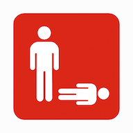
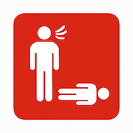

Your safety comes first — Is the area safe and secure?
✅ Yes = you can act safely
❌ No = get more info about safety
Unsafe
When you recognize an emergency, your first step is to assess the scene. Ask yourself:
Is the scene safe?
Are there any hazards?
What happened?
How did it happen?
Only proceed if the scene is safe. If it's not possible to secure it, do not intervene -> call 9-1-1 immediately.
Responsiveness

Check if the person is responsive.
✅ Yes = responsive
❌ No = unresponsive
Breathing

Check if the person is breathing.
✅ Yes = breathing
❌ No = not breathing
Detail of the Technic
Technic Steps
Technic Truc
Related Emergencies
Call 9-1-1
ABC - Airway, Breathing, Circulation
A - Airway
Verify that the airway is not obstructed (check mouth and throat).
B - Breathing
Is the person breathing normally?
C - Circulation
Are there any signs of circulation: intense bleeding? If yes, it has to be stopped before CPR.
CPR Rhythm
Select a BPM to match the required CPR rhythm:
Signs & Symptoms
Selected Symptoms
Selected Symptoms
List of Technics
List of Emergencies
Emergency Symptoms
Emergency Care
Emergency Type
Minor
Major
Critical
Emergency Medicaments
—
Emergency Technics
—
Legalities of First Aid
First aiders must:
Get permission, if possible, before providing care.
Only provide the care they were trained to give.
Continue providing care until another trained person takes over, they are too exhausted to continue, the scene becomes unsafe, or the person's condition improves and care is no longer needed.
Getting Permission to Help:
You must get permission (consent) before providing care.
For an unresponsive person, the law assumes you have permission.
For a young child without a caregiver, provide care.
If a person refuses care, call EMS/9-1-1.
If you are unable to call, first ensure your own safety and then offer to provide care.
SOAP Assessment
Secondary Assessment should be completed every 5–10 min for Critical, and 10–60 min for Major emergencies.
Protect documentation in wilderness or remote environment.
In our case, get a waterproof case for your smartphone.
Send the SOAP notes to the appropriate person. Here the PDF can be sent once back online.
If radioing, read the SOAP notes.
Prepare what you'll say. Be concise. Be objective.